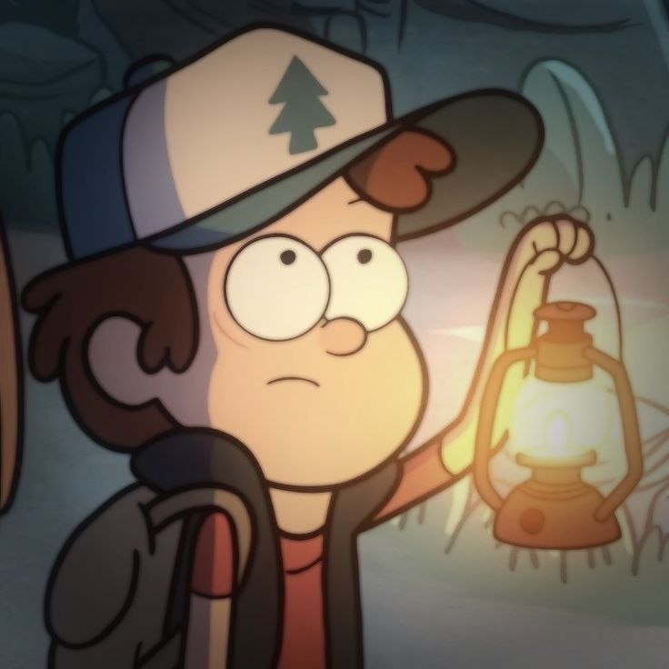
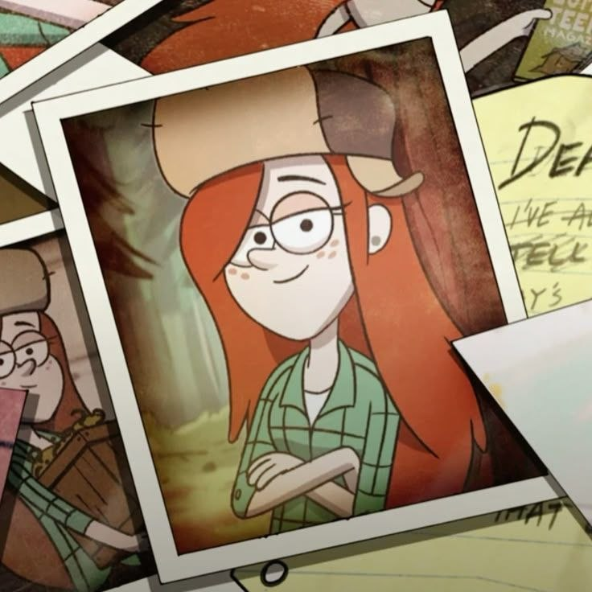

Name: Stanley Pines
Age: 58
Personality: Scammer
Information: A friendly uncle who can always help you or steal your money. His favorite subject is money. He is hiding something, but what is it...?
Name: Stanley Pines
Age: 58
Personality: Scammer
Information: A friendly uncle who can always help you or steal your money. His favorite subject is money. He is hiding something, but what is it...?

Name: Mabel Pines
Age: 13
Personality: Lover of everything
Information: She is the kindest person in the cartoon. She always loves helping people.

Name: Dipper Pines
Age: 13
Personality: Adventure lover
Information: He has Journal 3 and wants to find the author, the person who created all the journals. Also, he is in love with Wendy, but she is older than him.

Name: Soos Ramirez
Age: 22
Personality: Mystery Shack mechanic
Information: He works in the Mystery Shack and can fix anything. He does not like his birthday because his father has never come to visit.

Name: Wendy Corduroy
Age: 15
Personality: Mystery Shack souvenir seller
Information: She has a father and three brothers who are all lumberjacks. She has a lot of friends, but they often get into trouble.

Name: Stanford Pines
Age: 58
Personality: Scientist
Information: He has six fingers on each hand. When he was a student, he studied on a grant and created a perpetual motion machine. His most important work is writing Journal 1, Journal 2, and Journal 3.